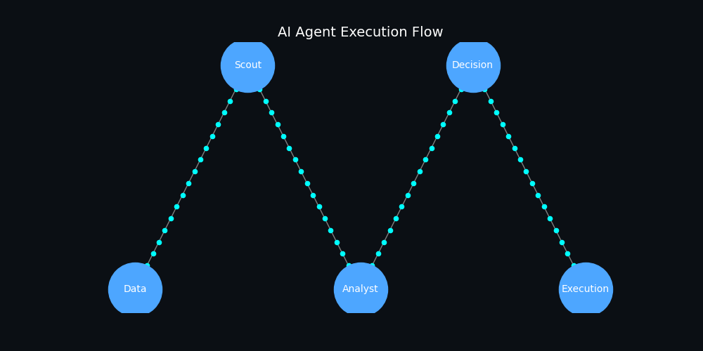

AI agents designed to execute, monitor, and optimize operations at scale.
Are your ERP and WMS systems connected via real-time APIs or manual processes?
Are workflows structured enough to automate decision-making?
Is there oversight for AI-driven decisions and accountability frameworks?
Can your systems support cloud or hybrid AI agent deployment?
Continuously monitors market data, trade risks, and disruptions.
Processes data to generate insights and risk indicators.
Evaluates scenarios and recommends optimal actions.
Triggers workflows such as rerouting shipments or adjusting orders.

Every AI decision is logged with reasoning and traceability.
Ensures alignment with global trade laws and ESG requirements.
Predefined limits to prevent high-risk autonomous actions.
Transparent reporting for leadership and governance bodies.
Capture data from logs, emails, and unstructured sources.
Convert fragmented data into usable intelligence.
Feed insights into decision systems and dashboards.
Agents improve accuracy through repeated use and feedback.
Employees manage and guide AI agents instead of manual execution.
Teams handle higher volumes with better accuracy.
Structured approach to reduce resistance and improve adoption.
Measure impact of AI on productivity and cost.
Evaluate your organization using the Agentic Maturity Index.
Start Assessment